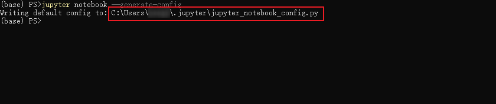
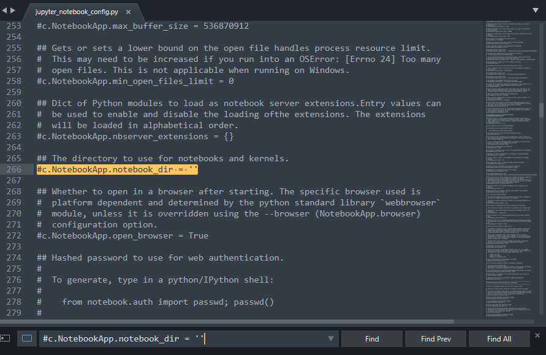
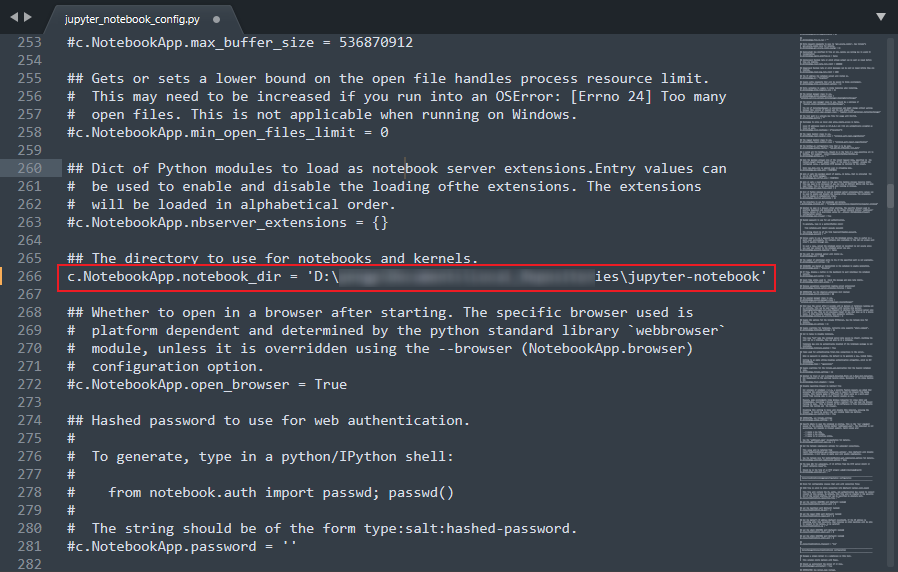
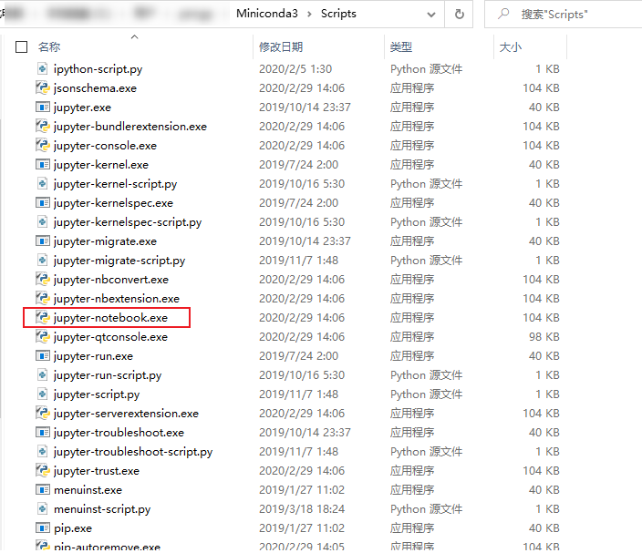

jupyter's 使用指南
jupyter notebook’s guide
0. 更改工作空间 && 切换运行内核
0.1 jupyter 初始工作空间的修改
创建目标文件夹，例如
jupyter-notebook。生成配置文件
1
jupyter notebook --generate-config

编辑生成的配置文件
找到这个配置项
#c.NotebookApp.notebook_dir = ''
更改为即可。

0.2 切换内核
1 | # 每个环境都需要安装 ipykernel |
在 Jupyter Notebook 里切换即可。
以下内容可略。
1. 安装 jupyter
1.1 Anaconda 自带
1.2 使用 pip 安装
1 | pip install jupyther |
1.3 使用 conda 安装
1 | conda install jupyter |
2. 卸载 jupyter
使用 pip uninstall jupyter 是卸不掉 jupyter 的，需要用到 pip-autoremove，它会卸载掉package和无用的依赖。
1 | pip install pip-autoremove |
或者使用 conda 卸载。
1 | conda uninstall jupyter notebook |
3. 使用 jupyter
打开 jupyter
一般可以通过在Anaconda Powershell Prompt 中输入命令
jupyter notebook。创建 jupyter notebook 快捷方式
找到
Scripts目录下jupyter-notebook.exe并创建快捷方式。